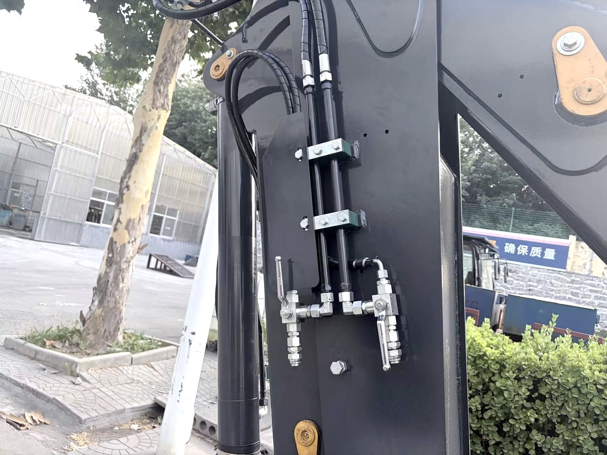

Most buyers spend weeks comparing machines and then ignore the parts question entirely — until the first breakdown, when they discover the hard way that a $30 hose or a $200 pump can stop a $40,000 machine for a week.
I have spent years on the factory floor watching machines get built, and years more helping clients keep them running in Africa, the Middle East, Southeast Asia and South America. The one thing every successful owner has in common is that they understand their parts. They know what wears, what breaks, what to stock, and who to call.
This guide is everything I know about backhoe loader parts, organized the way I think about it: the systems, the wear parts that bite you first, the components that need real understanding, and the practical side of ordering parts from China without getting burned.

In This Guide
- Know Your Machine: The Five Systems That Matter
- Wear Parts: The Parts You Will Replace Most Often
- Hydraulic System Parts: The Heart of Your Machine
- Engine Parts: What Fails, What Lasts
- Drivetrain and Axle Parts: Power to the Ground
- How to Find the Right Part for Your Machine
- Genuine vs Aftermarket Parts: The Real Trade-Off
- Ordering Parts from China Without Getting Burned
- First-Year Spare Parts Checklist for New Owners
- Frequently Asked Questions
Know Your Machine: The Five Systems That Matter
You cannot buy the right parts if you cannot name the system the part belongs to. Every backhoe loader — from a compact mini like the BL 20-07 to a heavy-duty BL 90-25 — is built from five main systems. When a part fails, it fails inside one of these.
1. Engine and Cooling System
The engine turns fuel into power, and the cooling system keeps that combustion from destroying the block. This system includes the engine block and internals, the turbocharger (on higher-horsepower models), the radiator, fan and fan drive, the air intake and filter, the fuel system with its filters and injection pump, and the exhaust system with the muffler and DPF on newer machines.
2. Hydraulic System
The hydraulic system is what makes a backhoe loader feel like it has superhuman strength. It includes the hydraulic pump (usually gear or piston type), the main control valve block, all the cylinders for the loader arms, backhoe boom and stabilizers, the hoses and hard lines that carry fluid, the hydraulic tank and filters, and the pilot system if your machine has servo controls. This is the system that fails most often in real-world use — and the one that punishes neglect fastest.
3. Transmission and Drivetrain
The drivetrain moves the machine. On most backhoe loaders this is a torque converter and power-shuttle transmission driving the wheels through a drive shaft and axles. Key parts include the transmission itself, the drive shafts and U-joints, the front and rear axles, the differential, the final drives and planetary gears, and of course the tires and rims. If you want to go deep on axles, my article on wet drive axles explains why oil-bathed wet brakes matter so much in dusty conditions.
4. Structural and Working Components
These are the steel bones of the machine: the loader arms, the backhoe boom and dipper, the buckets and quick-attach couplers, the stabilizers (outriggers), and the frame itself. Structural parts rarely fail suddenly — they wear slowly, and the wear shows up first in pins, bushings and welds. Catching that wear early is what separates a machine that runs for 15 years from one that gets scraped after six.
5. Electrical and Cab
The electrical system covers the battery, alternator and starter, the wiring harness and connectors, the instrument cluster, all the lights, and on modern machines the electronic control modules. Cab parts include the seat, joysticks and levers, pedals, glass, wipers and the air conditioner. Electrical failures are rarely catastrophic but can be the most frustrating to diagnose — which is why connectors and fuses belong in every spares kit.
Rule from the floor: When you call about a part, know which system it belongs to. A supplier who hears "I need the pump" has no idea if you mean hydraulic pump, fuel pump, water pump or steering pump — and ordering the wrong one is an expensive mistake that happens every single week.
Wear Parts: The Parts You Will Replace Most Often
Wear parts are designed to be replaced. They are the sacrificial components that protect the expensive steel and machinery around them. Every owner should understand these five categories, because together they account for most of your annual parts spending.
Bucket Teeth and Cutting Edges
Bucket teeth are the most-replaced part on a backhoe loader, period. A set typically lasts 200-600 operating hours depending on what you dig. Rocky gravel eats teeth; clay and soil are gentle by comparison.
- Teeth styles: standard, twin-tip (for rock), and frost (for frozen ground). The right tooth for your material extends life by 50% or more.
- Mounting: teeth mount either with a pin or with a twist-on adapter system. Pin-on teeth are cheaper but work loose; twist-on systems cost more upfront and save time on every change.
- Wear indicators: many modern teeth have a wear indicator line or hole. Replace before a third of the tooth is gone — a worn tooth digs slower, burns fuel and beats up the whole machine.
Cutting edges (the steel plates bolted to the bucket lip) wear the same way and are replaced by unbolting and bolting on new ones. Always keep the bolts torqued and check them weekly.
Pins and Bushings
Every moving joint — loader arm, backhoe boom, bucket linkage — pivots on a hardened steel pin running inside a bushing. These are cheap parts that protect very expensive parts. A set of pins and bushings for a loader arm might cost $50-150, while the boom casting they protect costs thousands.
- Grease every joint daily, until grease squeezes out — that is how you know the bushings are flushed and sealed.
- Inspect pins for scoring and bushings for ovaling at every service. A loose, clunking joint is telling you something is worn.
- Replace the pin and bushing together, never one without the other. Mismatched wear destroys the new part within weeks.
Hydraulic Hoses and Seals
Hoses are the arteries of the machine, and they fail for predictable reasons: abrasion against other hoses, heat from the engine, and simple age. A blown hose is the most common mid-job failure on a backhoe loader, and it is almost always the result of a hose that was rubbing or bulging for weeks before it let go.
- Check hoses for bulges, cracks, chafing and oil-weeping at every daily walk-around.
- Support long runs with clips or sleeves where hoses cross or rub.
- Always identify the fitting type (JIC, ORFS, BSP or flange) and size before ordering a replacement — this is the number-one cause of wrong hose orders.
Seals and O-rings fail at every cylinder and fitting. A good seal kit for your machine is cheap insurance against a cylinder that leaks fluid and lets air into the system.
Filters
Three filters matter most: engine oil filter, fuel filter, and hydraulic return filter. Many machines also have a pilot filter and an air filter.
- Engine oil filter: every oil change, typically every 250-500 hours.
- Fuel filter: every 500 hours or per the manual — more often if you run poor-quality fuel.
- Hydraulic return filter: every 500 hours or annually. This is the filter that protects your pump from contamination.
- Air filter: inspect monthly, replace per the restriction indicator — dusty sites cut filter life by half.
Never buy filters with no brand and no markings. A $5 unbranded filter that collapses can feed debris straight into an injection pump or hydraulic pump and cause a $2,000 repair.
Tires and Rims
Tires are the biggest single wear item in terms of cost. Backhoe loader tires are heavy industrial or agricultural patterns, and a set can cost $1,500-5,000 depending on size. I have written a full backhoe loader tire guide with sizing, pressure and rotation advice — the short version is: check pressure weekly, rotate front to back, and never let a tire run soft on the job site.
Hydraulic System Parts: The Heart of Your Machine
The hydraulic system deserves its own section because it is where most serious repair costs live. Understanding its main parts means you can talk to a supplier intelligently and avoid the most common ordering mistakes.
The Hydraulic Pump
The pump is the heart. Most backhoe loaders use a gear pump; higher-spec machines use a piston pump or a load-sensing variable pump. The pump converts engine power into oil flow, and it is the most expensive single part in the hydraulic system.
- Low oil level is the #1 pump killer. A pump running dry for even a minute can be destroyed.
- Contaminated oil is #2. The return filter is what stops debris from circulating into the pump — never run the machine without it.
- When replacing a pump, always find out why the old one failed first. Fix the cause, or the new pump dies the same way.
The Control Valve Block
This is the part in the middle that directs oil to the cylinders. Modern machines use a monoblock or sectional valve with individual spools for loader lift, bucket, boom, dipper, swing and stabilizers. Valve problems usually show up as slow or jerky movements, and are often caused by worn spools, sticking solenoids or a contaminated pilot system.

Hydraulic Cylinders
Each cylinder is a tube, a piston, a rod and a set of seals. Backhoe loaders typically have 8-12 cylinders counting both loader and backhoe ends. The most common failures are scored rods (from dirt), blown seals (from contamination or heat), and bent rods (from abuse). A cylinder rebuild — new seals and a re-polished or re-chromed rod — costs a fraction of a new cylinder.
Hoses, Fittings and Hard Lines
Every cylinder is fed by a hose or a hard line. Hose failure is the most common hydraulic repair, so learn the fitting types on your machine before you need them. Take a photo of the failed hose with both ends visible and measure the length — suppliers match hoses from photos and measurements every day.
Money advice: On a typical backhoe loader, 80% of hydraulic failures come from 20% of the causes: low oil, dirty oil, and neglected hoses. Buy a spare of each common hose on your machine, keep the tank full, and change the return filter on schedule. You will dodge most of the expensive surprises.
Engine Parts: What Fails, What Lasts
The engine is the most reliable system on a backhoe loader when it is treated right — and the most expensive to repair when it is not. Most backhoe loaders in export markets use 4-cylinder diesel engines from manufacturers like Yuchai, Weichai, Cummins or Perkins, in the 55-115 hp range.
Engine Parts That Fail Most Often
- Filters and belts: oil, fuel, air filters plus the fan and alternator belts. Cheap, frequent, and the cause of most overheating and shutdowns.
- Injectors and injection pump: the first casualties of dirty fuel. Use clean fuel and change the fuel filter on schedule and these live for years.
- Starter and alternator: electrical components that fail from heat, vibration and age. Both are bolt-on replacements.
- Water pump and thermostat: the usual suspects behind overheating. A failed thermostat is a $20 part; a melted head from ignoring it is a $4,000 repair.
- Turbocharger: on turbo models, the turbo fails from oil starvation or foreign objects. If a turbo whistles, smokes or uses oil, check the air intake and oil supply before anything else.
Engine Parts That Almost Never Fail
The block, crankshaft, connecting rods and cylinder head are essentially lifetime components on a well-maintained engine. If you are being told your engine needs internal parts before 8,000-10,000 hours, get a second opinion — and ask what caused the failure. In my experience, most "engine failures" are actually cooling, fuel or oiling system failures that were ignored for too long.
Drivetrain and Axle Parts: Power to the Ground
The drivetrain turns the engine's power into motion. It is heavy, expensive, and mostly trouble-free when looked after — but when it fails, the bills are big, so the parts knowledge here is worth money.
Transmission Parts
Most backhoe loaders use a torque converter with a power-shuttle transmission. The key parts are the torque converter, the clutch packs and discs, the valve body, and the control linkages. Transmission problems usually announce themselves as slipping, harsh shifts or burnt fluid. Burnt-smelling transmission fluid means clutch wear — get it checked before the packs disintegrate and send debris through the whole unit.
Drive Shafts and U-Joints
The drive shaft connects the transmission to the axles. U-joints (universal joints) wear and clunk, especially in dusty conditions where grease gets neglected. A failed U-joint at speed can whip and damage the shaft, the transmission housing or the axle. Grease the U-joints with the rest of the machine — they are easy to forget because they are underneath.
Axle Parts
The axles carry the weight and the final drive. Depending on the machine you have a front axle (usually steerable) and a rear axle, each with a differential, planetary final drives and — on wet-drive machines — oil-bathed multi-disc brakes. I explained the full picture in my wet drive axle article, but the practical parts point is this: keep the axle oil at the right level, use the spec oil, and change it on schedule. Axle bearings and seals last thousands of hours when the oil is right, and hundreds when it is not.
Tires, Rims and Wheel Nuts
Don't forget the simplest drivetrain parts: rims can crack from impact, wheel nuts work loose after tire changes, and the tire itself is a wear part with a limited life. Torque the wheel nuts after any tire service, and check them again after 50 hours.
How to Find the Right Part for Your Machine
This is where most owners waste money. Here is the exact process I use when a client needs a part:
- Find the machine serial number. It is stamped on a plate on the chassis or frame — usually near the cab door or on the loader frame. This number identifies the exact machine build.
- Find the component part numbers. The engine has its own serial/part number (stamped on the block), the transmission has one, the hydraulic pump has one, and so on. For filters, hoses and belts, the part number is printed on the part itself.
- Match, don't guess. Send the machine serial number and a clear photo of the old part with any numbers visible to your supplier. Ask them to confirm fitment before you pay.
- Buy the parts for the specific build. Two machines of the same model from different years can use different pumps or hoses. The model name alone is not enough.
Floor rule: I would rather answer ten emails with photos and numbers than sell you one wrong part. Any supplier who won't confirm fitment before taking your money is not a supplier you want to build a relationship with.
Genuine vs Aftermarket Parts: The Real Trade-Off
"Should I buy genuine or aftermarket?" is the most common question I get from owners, and the honest answer is: it depends on the part, the brand, and your supplier.
Where Genuine Is Worth the Premium
- Internal engine parts — pistons, liners, bearings. These are engineered to tight tolerances, and the cost of a failure dwarfs the savings.
- Hydraulic pumps and valve internals — same logic. A failed pump stops the machine for days.
- Electronics and sensors — ECUs, sensors and wiring are brand-specific, and cheap imitations cause ghost faults that cost more in diagnosis than they saved.
Where Aftermarket Is Smart
- Wear parts — teeth, cutting edges, pins, bushings, seals. These are commodities, and quality aftermarket versions are usually excellent.
- Filters and belts — from reputable brands (like Donaldson, Fleetguard or their Chinese equivalents), aftermarket filters are tested to spec and cost a fraction of genuine.
- Hydraulic hoses — any good hose shop can crimp a hose to spec for less than the OEM part.
- Lights, mirrors, wipers, minor trim — no downside to aftermarket.
The danger zone is unbranded parts of unknown origin. A part with no brand, no spec and no traceable manufacturing standard is a gamble — sometimes it lasts, sometimes it fails inside a week and takes something expensive with it. Buy from a supplier who can tell you the standard the part is built to and will back it with a warranty.
Ordering Parts from China Without Getting Burned
China builds more backhoe loaders than any other country, which is why Chinese-made parts — and parts for machines made there — are typically 30-60% cheaper than in Europe or North America. But cheap goes wrong when you skip the basics. Here is how I buy parts for export clients, every time:
Work With a Parts Supplier, Not a Middleman You Met Once
You want a supplier who exports construction machinery parts as their core business, not someone reselling random listings. A real parts supplier can send you photos of the actual part, tell you the manufacturing standard, and check fitment against your machine serial number. If a supplier only sends a catalog page and a price, treat it as a red flag.
Send the Evidence
Before ordering, send: the machine model and serial number, a photo of the old part with numbers visible, and the quantity you need. The more evidence you send, the less likely you are to receive a "close but wrong" part.
Consolidate Your Order
Freight is where the savings disappear. The smart play is to order your machine's spare parts together with the machine itself, or to batch parts into one consolidated shipment. Most parts are small and heavy — one well-packed export crate can hold a full first-year spares kit. I always recommend clients include a first-year parts kit in their shipping plan from day one.
Ask for the Part in Hand
Request photos and video of the actual part before it ships, and agree on the warranty terms in writing. A trustworthy supplier stands behind the part: if it arrives wrong or fails early, they replace it. If a supplier cannot or will not do this, walk away.
My standing offer: every backhoe loader I sell ships with a recommended first-year spares kit, and I help clients buy genuine-compatible parts for their existing machines from the same factory network I buy machines from. That is the "buying from someone who lowers your risk" part of what I do — the machine is the beginning, not the end.
First-Year Spare Parts Checklist for New Owners
If you are buying a new backhoe loader — whether a BL 35-12, a BL 70-25 or anything in between — start your parts stocking with this list. It covers roughly 90% of the breakdowns you will actually see in year one, and it fits in one export crate:
| Part | Qty | Why |
|---|---|---|
| Engine oil filter | 4 | One per oil change |
| Fuel filter | 4 | One per 500 hours |
| Hydraulic return filter | 2 | Protects the pump |
| Air filter elements | 2 | Dusty sites eat them |
| Fan belt + alternator belt | 2 each | Cheap insurance against overheating |
| Bucket teeth (set) | 1-2 sets | Most-replaced part, period |
| Pins & bushings (loader + backhoe) | 1 set | Protects expensive steel |
| Hydraulic hoses (common circuits) | 3-5 | The most common mid-job failure |
| O-ring & seal kit | 1 | Fixes leaks on site |
| Hydraulic oil (recommended spec) | 1 drum | Topping up + first change |
| Engine oil (recommended spec) | 1 case | Oil changes on schedule |
| Grease + grease gun | 1 kit | Daily lubrication is non-negotiable |
Add your local conditions to this list. High altitude? Extra air filters. Extreme heat? Extra belts and hoses. Rock-heavy work? Extra teeth. The list adapts — the discipline doesn't.
For the full rundown on keeping your machine healthy, see my backhoe loader maintenance guide and the pre-delivery and daily inspection checklist. And when something does go wrong, the troubleshooting guide walks through the most common failures and the fixes you can do yourself.
Frequently Asked Questions
What are the most commonly replaced backhoe loader parts?
Bucket teeth and cutting edges, pins and bushings, hydraulic hoses, O-rings and seals, and the three main filters (engine oil, fuel, hydraulic). These five categories account for most of an owner's annual parts spending and should be in every first-year spares kit.
How do I know which part number fits my machine?
Find the machine serial number stamped on the chassis or frame plate, then the component part numbers (engine, transmission, pump, and so on — usually stamped on the component or printed on the part). Send these to your supplier and ask them to confirm fitment. Never rely on the model name alone, because two machines of the same model from different years can use different components.
Are aftermarket parts as good as genuine parts?
Quality varies enormously. Reputable aftermarket wear parts, filters and hoses are often as good as genuine at 30-60% lower cost. The danger is unbranded parts of unknown origin. Buy from a supplier who states the manufacturing standard, shows the actual part, and backs it with a warranty.
How often should I replace hydraulic filters on a backhoe loader?
Most manufacturers recommend the hydraulic return filter every 500 hours or annually, and the pilot filter every 1,000 hours. Hydraulic oil changes are typically every 1,000-2,000 hours depending on oil type and working conditions. Dusty sites mean shorter intervals.
How long do bucket teeth last?
Typically 200-600 operating hours depending on material. Abrasive gravel wears teeth much faster than soil or clay. Rotate teeth front-to-back and replace them once a third of the tooth is worn — worn teeth cost fuel and dig slower.
What should I do if a hydraulic hose blows on site?
Stop the machine and relieve hydraulic pressure before touching anything. Identify the failed hose, note the fitting type and size at both ends, and match it with a spare or a new crimped hose. Never ignore a small leak — it can empty the tank and destroy the pump within minutes.
Can I buy backhoe loader parts directly from China?
Yes, and it is usually the smart move — parts from China are typically 30-60% cheaper. Order from a supplier who exports construction machinery parts regularly, can verify fitment against your machine, and consolidates parts with your machine shipment to save freight.
What spare parts should I stock for a new backhoe loader?
Start with filters (engine oil, fuel, hydraulic, air), belts, a bucket tooth set, pins and bushings, 3-5 hydraulic hoses for the common circuits, a seal kit, and the correct engine and hydraulic oils. This covers roughly 90% of year-one breakdowns.
How do I prevent premature wear on pins and bushings?
Grease every grease nipple daily until grease squeezes out of the joint — that proves the bushings are flushed. Replace pins before bore wear turns oval, and always replace pin and bushing as a pair. Seal kits and anti-wear bushings extend service intervals significantly.
Do parts from one brand fit other brands of backhoe loaders?
Sometimes, but never assume. Filters, hoses, cylinders, pumps and axle parts often use standard interface sizes and interchange across brands. Structural parts like booms, frames and buckets are almost always brand-specific. Verify with part numbers and measurements before ordering an interchange part.
Building a Machine Fleet — or Keeping One Running?
I supply backhoe loaders and genuine-compatible spare parts from the same factory network, and I help clients build first-year parts kits into every order. Tell me your machine model and what you need — I'll confirm fitment before anything ships.
Message Vivian on WhatsApp